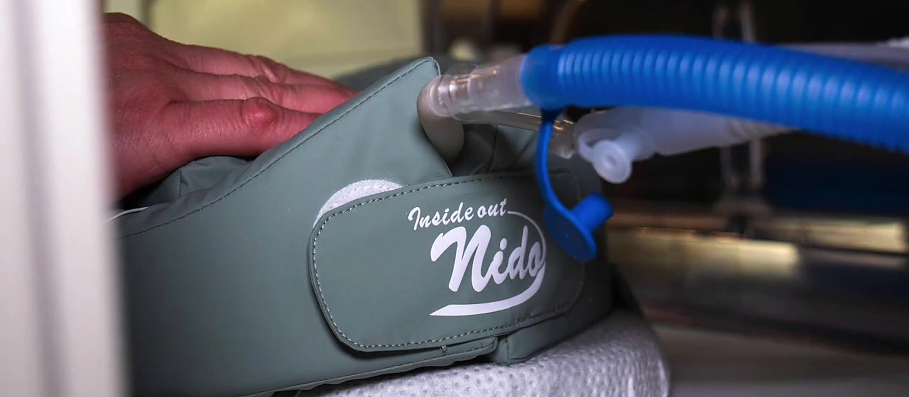
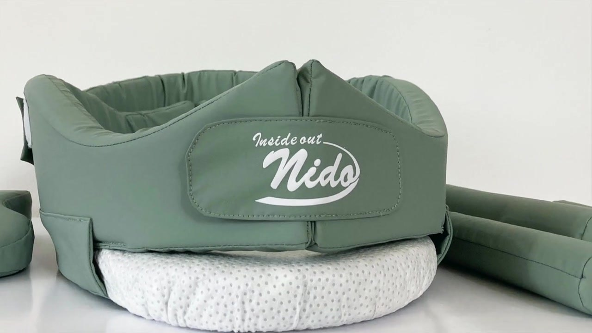
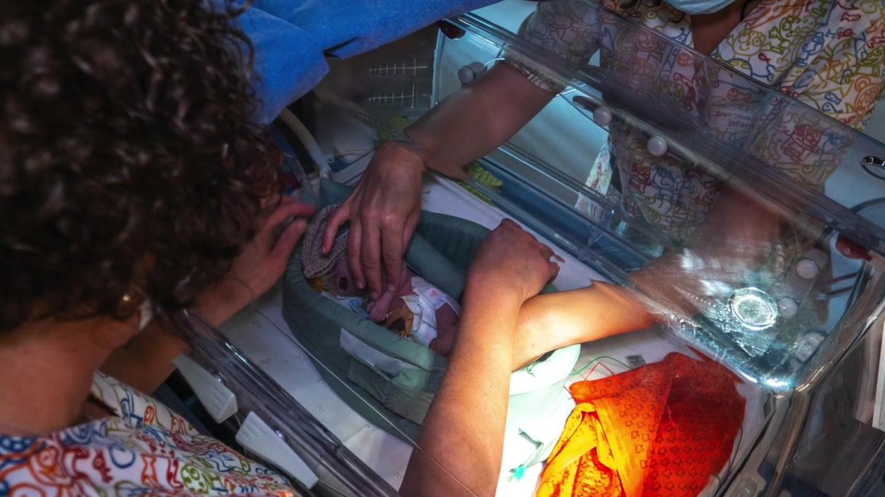
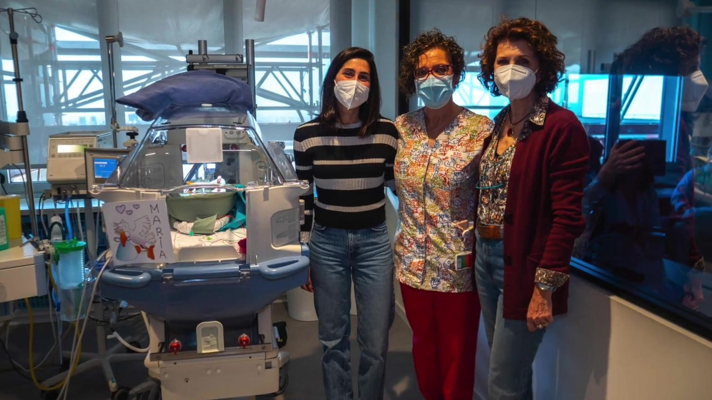

Desarrollado con
Contención y estimulación sensorial para el recién nacido prematuro
Nido es un sistema patentado para la UCI neonatal. Favorece una postura adecuada, mantiene el calor del bebé y el olor de sus padres, y se prepara en 3 minutos en lugar de 12.
- Preparación
- 3 min, antes 12
- Diseño
- Sistema patentado
- Colaboración clínica
- 6 hospitales
- Limpieza
- Desinfectable
Con la colaboración de
Las primeras semanas en la UCI neonatal cuentan
El prematuro necesita contención, una postura adecuada y estímulos controlados mientras termina de desarrollarse. Su familia necesita estar cerca. Y el equipo de enfermería necesita herramientas que no le resten tiempo.
1 de cada 10
bebés nace antes de tiempo.
- 13,4 millones de nacimientos prematuros en el mundo en 2020OMS, 2023
- 30.000 bebés prematuros cada año en EspañaFuente por confirmar
Un nido listo para usar en la incubadora
Nido combina diseño ergonómico y estimulación sensorial para cuidar las necesidades físicas y emocionales del prematuro, siguiendo los principios de los cuidados centrados en el desarrollo.

- 1Contorno acolchadoRodea al bebé y le da contención en una postura recogida.
- 2Cierre ajustableAdapta el nido al tamaño y a la posición del bebé.
- 3Rodillos de posicionamientoPiezas sueltas para ajustar el apoyo.
- 4Base estableMantiene el nido en su sitio dentro de la incubadora.

Pensado para el bebé, la familia y el equipo
- El bebé
- Contención y una postura adecuada
- Estimulación sensorial suave y controlada
- Mantiene su calor
- La familia
- Conserva el olor de los padres
- Refuerza el vínculo durante el ingreso
- Enfermería
- Preparación en 3 minutos
- Ergonómico en el día a día
- Desinfectable entre pacientes
Del nido hecho a mano a un nido listo en 3 minutos
Menos tiempo de preparación significa más tiempo para la interacción con el paciente y las prácticas asistenciales.
- 0
- 3
- 6
- 9
- 12 min
Nido tradicional
- Preparar sábanas y rodillos
- Montar el contorno a mano
- Ajustar y reajustar la postura
Con Nido
- Colocar Nido en la incubadora
- Ajustar el cierre y los rodillos
Tiempos medidos por Nido Innova. Pasos por confirmar
Nido en la UCI neonatal
Del uso diario en la unidad al equipo que lo ha hecho posible. Elige una parte para ir directamente a ella.
Entrevista de 8:21, en Facebook
Diseñado junto a quienes lo usan
Profesionales de neonatología, pediatría y enfermería han participado en todo el proceso de diseño, para llevar Nido al mercado como producto sanitario con todas sus garantías.
- Barcelona · desarrollo del producto
- Barcelona
- Sant Cugat del Vallès
- Hospital de Barcelona
- Hospital Clínic Universitari de ValènciaValència
- Hospital Regional Universitario de MálagaMálaga
- Facultat d'Infermeria
- Escola Universitària de Disseny i Enginyeria
- i4KIDSPresentado en CosmoCaixa, Barcelona
Ficha técnica
Lo que necesitan compras y la supervisión de enfermería para valorar Nido.
- Uso
- UCI neonatal y pediatría
- Paciente
- Recién nacido prematuro y neonato hospitalizado
- Funciones
- Contención, posicionamiento y estimulación sensorial
- Componentes
- Contorno, cierre ajustable, rodillos y base
- Limpieza
- Desinfectable · [Protocolo y productos]
- Materiales
- [Tejidos y rellenos]
- Regulación
- [Marcado CE · clase]
- Propiedad intelectual
- Sistema patentado
| Talla | Peso del bebé | Referencia |
|---|---|---|
| [Talla] | [Rango de peso] | [Ref.] |
| [Talla] | [Rango de peso] | [Ref.] |
Antes de incorporarlo a tu unidad
¿Nido es un producto sanitario?
Nido se ha desarrollado para comercializarse como producto sanitario. [Marcado CE, clase y organismo notificado]
¿Cómo se limpia entre pacientes?
Es desinfectable. [Protocolo de limpieza y productos compatibles]
¿Para qué pacientes está indicado?
Para recién nacidos prematuros y neonatos hospitalizados en UCI neonatal y pediatría. [Rango de peso y edad gestacional]
¿Podemos probarlo antes de comprar?
Sí. Te enseñamos el sistema en una demostración en tu unidad. [Unidades de prueba disponibles]
¿Cómo se compra?
Escríbenos y te enviamos presupuesto y condiciones. [Distribuidor o compra directa, concursos públicos]

Diseño y salud, en el mismo equipo
Somos expertas en desarrollo de producto. Creamos soluciones centradas en las personas que responden a necesidades reales del sector sanitario.
- Eva DíazFundadora
- María José TroyanoAsesora médica
- Paola MecchiaAsesora de producto
Prueba Nido en tu unidad
Escríbenos y te proponemos una fecha para la demostración. El correo se abre ya preparado con los datos que necesitamos.
Para preparar la demostración, cuéntanos
- Hospital y unidad
- Tu cargo
- Número aproximado de puestos de incubadora
- Teléfono de contacto